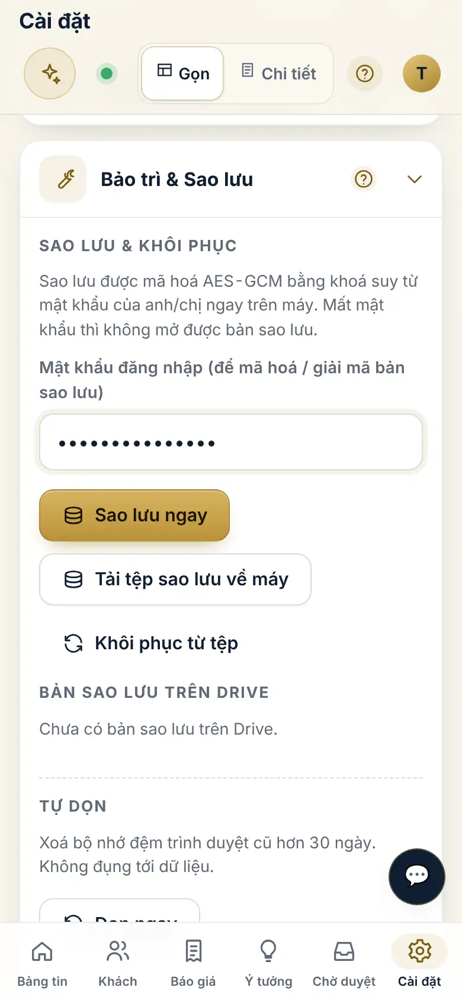
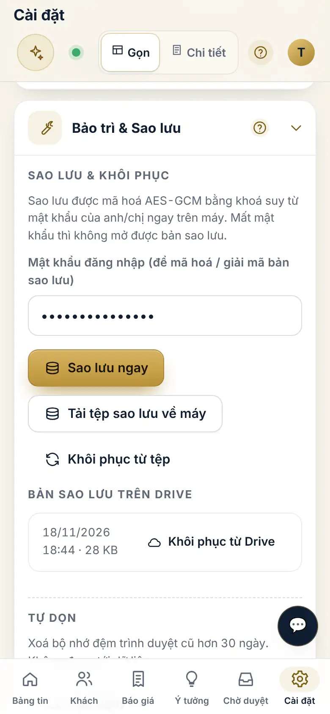
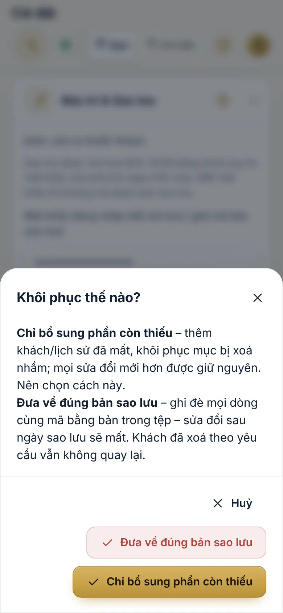

Sao lưu và khôi phục
Mở: Cài đặt › Bảo trì & Sao lưu.
Bản sao lưu được mã hoá bằng mật khẩu đăng nhập ngay trên máy. Quên mật khẩu đó thì không mở được bản sao lưu.
Sao lưu
- Gõ Mật khẩu đăng nhập vào ô ở đầu mục.
- Chọn một (hoặc cả hai):
- Sao lưu ngay – lưu lên Google Drive của anh/chị. App báo "Đã sao lưu … dòng." và bản sao lưu hiện ở BẢN SAO LƯU TRÊN DRIVE (ngày giờ, dung lượng).
- Tải tệp sao lưu về máy – tải tệp
sao-luu-<ngày>.studio-backup.json. Cất ở nơi an toàn.


Khôi phục
- Gõ Mật khẩu đăng nhập (đúng mật khẩu lúc sao lưu).
- Bấm Khôi phục từ tệp rồi chọn tệp sao lưu trên máy, hoặc bấm Khôi phục từ Drive ở dòng bản sao lưu trên Drive.
- App hỏi Khôi phục thế nào?
- Chỉ bổ sung phần còn thiếu (nên chọn): thêm khách/lịch sử đã mất, lấy lại mục xoá nhầm; sửa đổi mới hơn giữ nguyên.
- Đưa về đúng bản sao lưu: ghi đè bằng bản trong tệp – sửa đổi sau ngày sao lưu sẽ mất.
- App báo số dòng đã bổ sung và tự đồng bộ lên máy chủ.

Khách đã xoá theo yêu cầu không quay lại dù khôi phục bản cũ – hộp khôi phục báo trước số mục sẽ bị bỏ.
Ô mật khẩu để trống hoặc gõ sai: app hỏi mật khẩu ngay trong hộp, nhập lại được, không phải chọn lại tệp. Hộp Khôi phục thế nào? cho xem trước trong tệp có bao nhiêu khách, đối tác, lịch sử, lịch hẹn, dự án.
Nhắc sao lưu và bản Excel
- Quá 7 ngày chưa sao lưu, Bảng tin của Chủ hiện thẻ nhắc Sao lưu ngay / Để sau (hoãn 1 ngày). Dưới các nút sao lưu ghi Lần sao lưu gần nhất.
- Xuất Excel danh sách khách: tệp .xlsx đọc được ngay (tên, số điện thoại, trạng thái, nhu cầu, dự án…). Tệp này không mã hoá – giữ kỹ, không gửi cho người khác.
← Mục lục · Tiếp: Xoá dữ liệu khách